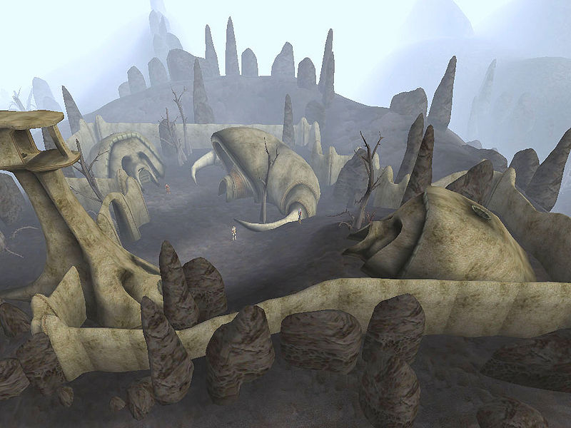

| Ald'ruhn |
| Alignment: Redoran |
| Region: Ashlands |
|
Transport:
Almsivi Intervention:
Divine Intervention:
|
Services:
|
|  Indarys Manor, the Redoran stronghold after completion |
Indarys Manor is a Redoran stronghold in the Ashlands region, located on the site of Bal Isra. Players who advance to the House Redoran rank of Kinsman will be able to construct it by undertaking the related questline. Indarys Manor is the most populous stronghold and has the greatest overall storage;
The compound consists of a manor and three NPC buildings enclosed by a stone wall. There are three trainers and three merchants located here, including a spellmaker and blacksmith.
The nearest large settlement is Ald'ruhn, although Maar Gan is located a slightly shorter distance to the northeast. Almsivi Intervention teleports to Ald'ruhn, which has Silt Strider service to Balmora, Gnisis, Khuul and Maar Gan. Divine Intervention targets Buckmoth Legion Fort. From Ald'ruhn's Mages Guild, Guild Guide service will teleport the player to any other Mages Guild location in Vvardenfell. Indarys Manor is also centrally placed in proximity to the ancient Dunmer strongholds of Andasreth, Falasmaryon and Kogoruhn, which offer travel via Propylon Chamber.